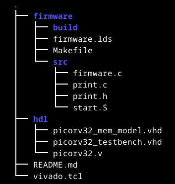

Try to get the example for the Hamming distance to work.
Make a comparison like the table in 202 where you compare your pure software implementation of the Hamming distance with the codesign.
Transform the Hamming distance coprocessor to work on the div instruction in stead of the mul instruction.
Make a new coprocessor that calculates the average of two integer numbers. If the result is non-integer, round it down. For example avg(32,16) = 24 and avg(3,4) = 3. Try to avoid using the pcpi_wait signal.
Compare a software-only version with a hardware/software codesign of the solution.
Handing in exercises
When you upload your assigments, check the following:
• all your files are archived in one single file (.zip, .tar, …)
• structurise your files in subfolders
• firmware/ containing all the software: build files, binaries, …
• firmware/src/ containing all the source files (.c, .S, …)
• hdl/ containing all the hardware descriptions (.vhd, .v, .sv, …)
• hdl/tb/ containing all the simulation files (.vhd)
• files like a README.md, vivado_script.tcl, …
• README.md: if you want to add some additional info
• vivado.tcl: script to automate project creation in Vivado

If you look at the structure of how you need to hand in assignments, you might spot something. These are all plain text files and there are not many of them. However, this will enable you to generate all data you need: binaries, hex-files, vivado projects, bitstreams, …
In case you want to use some version control (like GitHub), it would make sense to track only these files.